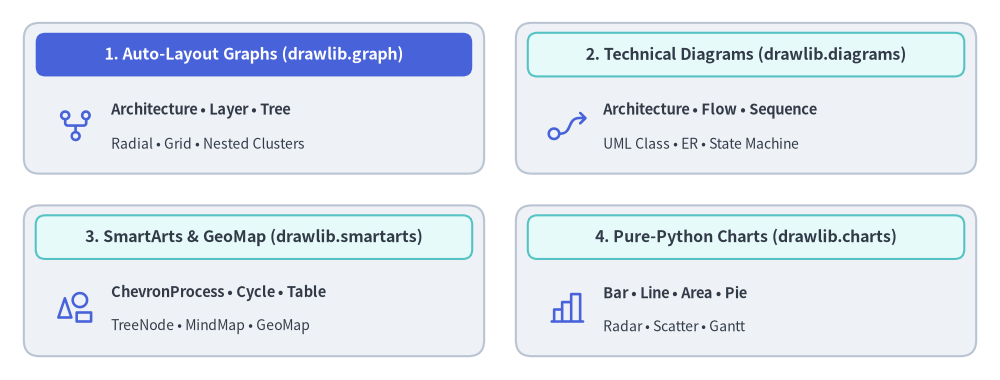

Drawlib ドキュメント
Drawlib は、「Illustration as Code（コードとしての図解）」 および 「Illustrated Documentation as Code（コードとしての図解ドキュメント）」 のために設計された、ピュア Python の描画ライブラリ兼ドキュメントコンパイラです。
現代のソフトウェアエンジニアリングと 自律型 AI コーディングエージェント のためにゼロから設計された Drawlib は、手作業の GUI 作図ツールや管理しづらいバイナリ画像ファイルを不要にします。開発者や LLM エージェントは、出版品質のアーキテクチャ図、フローチャート、データチャート、そして複数ページからなる本格的なドキュメントサイトまで、すべてを宣言的な Python コードのみで作成・バージョン管理・公開できます。
Note — Drawlib と Gemini による自律構築: 本ドキュメントのすべての本文と図版は、Drawlib と Gemini Coding Agent（Antigravity IDE 上で稼働）を用いて、この Git リポジトリ内で直接作成されました。人間の関与はハイレベルな指示（プロンプト）のみにとどまり、ドキュメント構成の設計、技術解説の執筆、図版のデザイン、そして視覚的なレイアウト検証まですべて Gemini が自律的に実行しています。
主要な 3 つの柱
1. AI 駆動のドキュメント構築パイプライン
Drawlib は、AI コーディングエージェント（Claude Code、Cursor、Gemini など）が技術ドキュメントを自律的に執筆・保守できるよう設計されています。
- ルールとコンテキストのオンデマンド参照:
drawlib rules show <topic>により、必要な構文ルールや設計ガイドラインをピンポイントで参照できます。 - マルチモーダル視覚検証ループ: エージェントは座標グリッド付き画像（
-g）を出力し、ラベルの収まりやコネクタの経路を視覚的に確認して、レイアウトの崩れを自律的に自己修正します。
2. 豊富な高水準ビジュアライゼーション
何百もの基本図形を手作業で組み合わせる必要はありません。Drawlib は実務ですぐに使える宣言的な高水準コンポーネントを提供します。
- 自動レイアウトグラフ (
drawlib.graph): 重なりのない座標（get_layout()）、ネストされたクラスタ境界、およびoffset()による微調整を計算する宣言的グラフレイアウトソルバー（ArchitectureGraph、LayerGraph、TreeGraph、RadialGraph、GridGraph）を提供し、drawlib.diagramsやdrawlib.shapesと組み合わせて描画できます。 - SmartArts（スマートアート）: プロセスパイプライン（
ChevronProcess）、サイクル図（Cycle）、データテーブル（Table）、階層ツリー（Tree）などを備えています。 - データチャート: 外部のグラフ描画ライブラリへの追加依存なしに、ピュア Python で棒グラフ・折れ線グラフ・面グラフ・円グラフ・レーダーチャート・散布図・ガントチャートを描画できます。
- テクニカルダイアグラム: クラウドアーキテクチャ図（
ArchitectureDiagram）、フロー図（FlowDiagram）、API シーケンス図（SequenceDiagram）、UML クラス図（ClassDiagram）、ER 図（ERDiagram）、ステートマシン図（StateDiagram）をサポートします。

Source Code
from drawlib.canvas import save, setup
from drawlib.icons import phosphor
from drawlib.shapes import rectangle
from drawlib.styles import Styles
from drawlib.text import text
setup(width=126, height=48)
hdr_white = Styles.WhiteBold.patch(text_size=11.5)
hdr_dark = Styles.DarkBold.patch(text_size=11.5)
body_bold = Styles.DarkBold.patch(text_size=10.5, halign="left")
body_sub = Styles.Dark.patch(text_size=10.0, halign="left")
# 1. Top-Left: Auto-Layout Graphs (Hero primary header)
rectangle((32.0, 35.5), width=58.0, height=19.0, style=Styles.Neutral.patch(shape_r=2.0))
rectangle((32.0, 41.0), width=55.0, height=5.5, style=Styles.PrimaryFlat.patch(shape_r=1.2), text="1. Auto-Layout Graphs (drawlib.graph)", text_style=hdr_white)
phosphor.git_fork((9.5, 32.0), width=5.2, style=Styles.Primary)
text((14.0, 34.0), "Architecture • Layer • Tree", style=body_bold)
text((14.0, 29.8), "Radial • Grid • Nested Clusters", style=body_sub)
# 2. Top-Right: Technical Diagrams
rectangle((94.0, 35.5), width=58.0, height=19.0, style=Styles.Neutral.patch(shape_r=2.0))
rectangle((94.0, 41.0), width=55.0, height=5.5, style=Styles.SecondaryNeutral.patch(shape_r=1.2), text="2. Technical Diagrams (drawlib.diagrams)", text_style=hdr_dark)
phosphor.flow_arrow((71.5, 32.0), width=5.2, style=Styles.Primary)
text((76.0, 34.0), "Architecture • Flow • Sequence", style=body_bold)
text((76.0, 29.8), "UML Class • ER • State Machine", style=body_sub)
# 3. Bottom-Left: SmartArts & GeoMap
rectangle((32.0, 12.5), width=58.0, height=19.0, style=Styles.Neutral.patch(shape_r=2.0))
rectangle((32.0, 18.0), width=55.0, height=5.5, style=Styles.SecondaryNeutral.patch(shape_r=1.2), text="3. SmartArts & GeoMap (drawlib.smartarts)", text_style=hdr_dark)
phosphor.shapes((9.5, 9.0), width=5.2, style=Styles.Primary)
text((14.0, 11.0), "ChevronProcess • Cycle • Table", style=body_bold)
text((14.0, 6.8), "TreeNode • MindMap • GeoMap", style=body_sub)
# 4. Bottom-Right: Pure-Python Charts
rectangle((94.0, 12.5), width=58.0, height=19.0, style=Styles.Neutral.patch(shape_r=2.0))
rectangle((94.0, 18.0), width=55.0, height=5.5, style=Styles.SecondaryNeutral.patch(shape_r=1.2), text="4. Pure-Python Charts (drawlib.charts)", text_style=hdr_dark)
phosphor.chart_bar((71.5, 9.0), width=5.2, style=Styles.Primary)
text((76.0, 11.0), "Bar • Line • Area • Pie", style=body_bold)
text((76.0, 6.8), "Radar • Scatter • Gantt", style=body_sub)
save()
3. 統合ドキュメントコンパイラ
標準の Markdown ファイル内に drawlib ブロックを埋め込んで技術仕様書やシステムアーキテクチャを記述すれば、1 つのコマンド（drawlib build）ですべてを以下の形式へコンパイルできます。
- レスポンシブ HTML サイト (
docs_html/): サイドバーナビゲーションと即時検索を備えた完全な静的 Web サイト。 - GitHub 用 Markdown (
docs/): シンタックスハイライトされたコードと相対パスの埋め込み画像を含むクリーンな Markdown。 - ヘッドレス PDF (
docs.pdf): Chromium 経由で生成される出版品質のベクター PDF。
ドキュメントロードマップ
以下の包括的なガイドから各機能の詳細を確認できます。
- はじめに
- 基本設計思想、インストール、クイックスタート、座標系の原則、プロジェクト構成、および AI エージェント設定。
- 描画プリミティブとスタイル
- 低レベルのベクター図形、多角形、ドメインプリミティブ、ブロック矢印、線、タイポグラフィ、フォント、画像処理、プリセットテーマ、カラーパレット。
- アイコンとブランドスイート
- 全 34 アイコンモジュール（合計 4,538 種の標準アイコン）: Phosphor ベクターアイコン、GCP・AWS・Azure クラウドアイコン、15 種の公式ドメインブランドスイート、および 15 種のベンダー中立な Original 2D パステルアイコンスイート。
- SmartArts（スマートアート）
- 高水準インフォグラフィックス: プロセスパイプライン、サイクル図、データテーブル、階層ツリー、マインドマップ、グリッド、ピラミッド、リスト、ソースコードブロック、地理マップ。
- Charts（定量チャート）
- 宣言的データプロット: 軸と凡例、棒グラフ、折れ線グラフ、面グラフ、円グラフ、レーダーチャート、散布図、プロジェクト用ガントチャート。
- テクニカルダイアグラム
- 座標制御型のエンジニアリング図版: クラウドアーキテクチャ図、フロー図、シーケンス図、UML クラス図、ER 図、ステートマシン図。
- 自動レイアウトグラフ
- 宣言的グラフレイアウトソルバー（
ArchitectureGraph、LayerGraph、TreeGraph、RadialGraph、GridGraph）、ネストされたクラスタ、offset()による微調整、コードエクスポート。
- 宣言的グラフレイアウトソルバー（
- アニメーション（APNG & WebP）
- マルチフレームアニメーション、滑らかな色遷移、コンポーネントの段階的表示、矢印の伸長（
draw_ratio）、および全 Drawlib モジュール横断のカメラパン・ズーム。
- マルチフレームアニメーション、滑らかな色遷移、コンポーネントの段階的表示、矢印の伸長（
- ドキュメントビルダと CLI
- コードとしての図解ドキュメント: Markdown コードブロック構文、CLI リファレンス、プロジェクトテンプレート（
doc、site、slide、images）、1920×1080 スライドステージレイアウト、カスタマイズ、2 層キャッシュ機構と CI/CD。
- コードとしての図解ドキュメント: Markdown コードブロック構文、CLI リファレンス、プロジェクトテンプレート（
- AI エージェントと高度な統合
- 自律型エージェント向け指示ルール、視覚的自己修正フィードバックループ、プログラマティック Python API、幾何・数学ユーティリティ、トラブルシューティング。